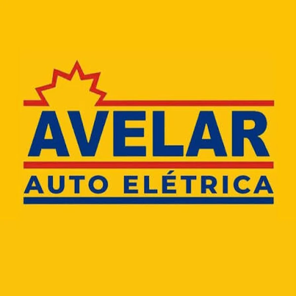
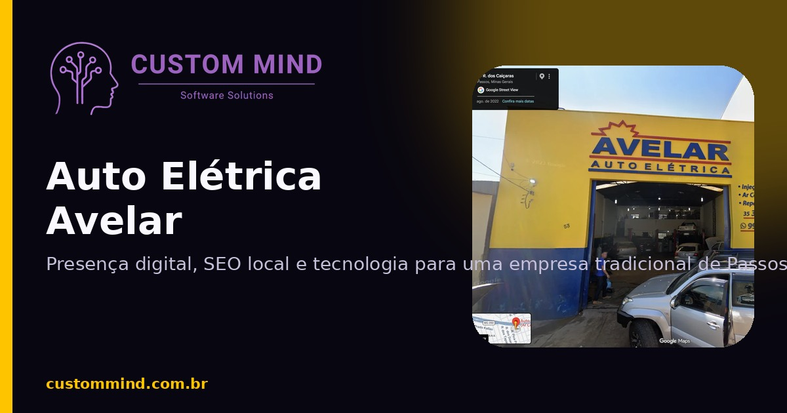

Técnica antes da troca.
O serviço parte de leitura, teste e identificação da causa real.
A Auto Elétrica Avelar atende em Passos–MG com diagnóstico, injeção, climatização, módulos, remap e eletrônica para veículos leves, pesados e agrícolas.


A presença digital foi organizada para transmitir a mesma lógica da oficina: primeiro entender, testar e diagnosticar; depois indicar o caminho.

O serviço parte de leitura, teste e identificação da causa real.
Uma linguagem que comporta diferentes veículos sem parecer genérica.
Contato, localização e serviços aparecem com clareza para quem precisa resolver um problema agora.
O site organiza a amplitude técnica sem transformar tudo em uma lista cansativa.
Identidade do cliente na frente; tecnologia e estrutura trabalhando por baixo.
autoeletricaavelar.com.br →